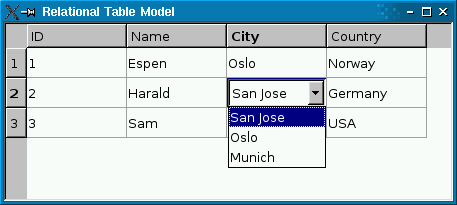

QSqlRelationalDelegate Class
The QSqlRelationalDelegate class provides a delegate that is used to display and edit data from a QSqlRelationalTableModel. More...
| Header: | #include <QSqlRelationalDelegate> |
| qmake: | QT += sql |
| Inherits: | QItemDelegate |
Public Functions
| QSqlRelationalDelegate(QObject *parent = nullptr) | |
| virtual | ~QSqlRelationalDelegate() |
Reimplemented Public Functions
| virtual QWidget * | createEditor(QWidget *parent, const QStyleOptionViewItem &option, const QModelIndex &index) const override |
| virtual void | setModelData(QWidget *editor, QAbstractItemModel *model, const QModelIndex &index) const override |
Detailed Description
Unlike the default delegate, QSqlRelationalDelegate provides a combobox for fields that are foreign keys into other tables. To use the class, simply call QAbstractItemView::setItemDelegate() on the view with an instance of QSqlRelationalDelegate:
QTableView *view = new QTableView;
view->setModel(model);
view->setItemDelegate(new QSqlRelationalDelegate(view));
The Relational Table Model example (shown below) illustrates how to use QSqlRelationalDelegate in conjunction with QSqlRelationalTableModel to provide tables with foreign key support.

See also QSqlRelationalTableModel and Model/View Programming.
Member Function Documentation
QSqlRelationalDelegate::QSqlRelationalDelegate(QObject *parent = nullptr)
Constructs a QSqlRelationalDelegate object with the given parent.
[virtual] QSqlRelationalDelegate::~QSqlRelationalDelegate()
Destroys the QSqlRelationalDelegate object and frees any allocated resources.
[override virtual] QWidget *QSqlRelationalDelegate::createEditor(QWidget *parent, const QStyleOptionViewItem &option, const QModelIndex &index) const
Reimplements: QItemDelegate::createEditor(QWidget *parent, const QStyleOptionViewItem &option, const QModelIndex &index) const.
[override virtual] void QSqlRelationalDelegate::setModelData(QWidget *editor, QAbstractItemModel *model, const QModelIndex &index) const
Reimplements: QItemDelegate::setModelData(QWidget *editor, QAbstractItemModel *model, const QModelIndex &index) const.